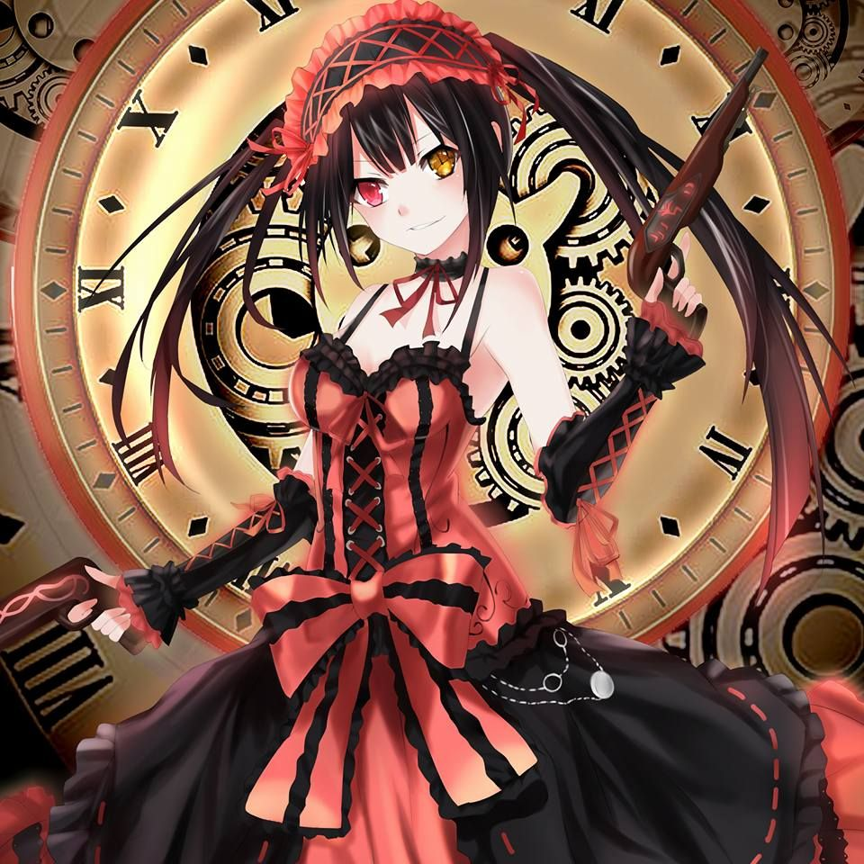
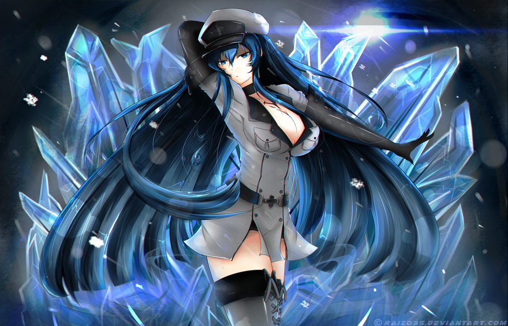
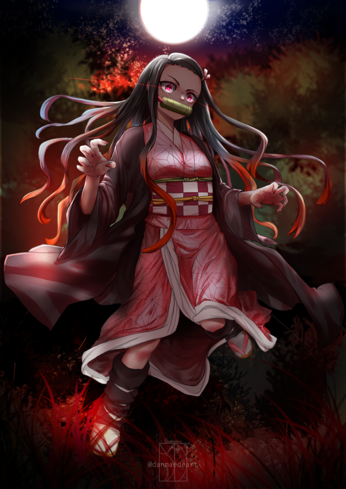

Welcome to my Waifu's
Date A Live

Kanji: 時崎 狂三
Name: Tokisaki Kurumi
Birthday: June 10th
Age: 17-18 (Physically)
Gender: Female
Species: Human | Spirit (Formly)
Eye Color: Red | Gold Clock (Left Eye; Spirit)
Nicknames: Kurumin | Nightmare (Spirit Form)
Akame Ga Kill!

Kanji/Kana: エスデス
Name: Esdeath (General Esdeath)
Birthday: June 27th
Age: 20's
Gender: Female
Height: 170cm (5'7)
Eye Color: Blue
Blood Type: O
Faction: Jaeger | The Empire | Partas Clan (Disbanded)
Teigu: Demon's Extract
Darling in the Franxx

Katakana: ゼロツー
Name: Zero Two
Code: 002
Alias: Partner Killer
Birthday: Unknown
Age: Unknown
Gender: Female
Height: 170cm (5'7)
Classification: Parasite
Occupation: Pistil
Franxx: Strelizia
Demon Slayer

Kanji: 竈門 禰豆子
Name: Kamado Nezuko
Alias: The Chosen Demon
Birthday: December 28th
Age: 12 (Physically) | 14 (Chronologically)
Race: Demon (Formerly)
Gender: Female
Affiliation: Demon Slayer Corps (Formlerly)
Occupation: Village Girl (Formerly) | Demon (Formerly)